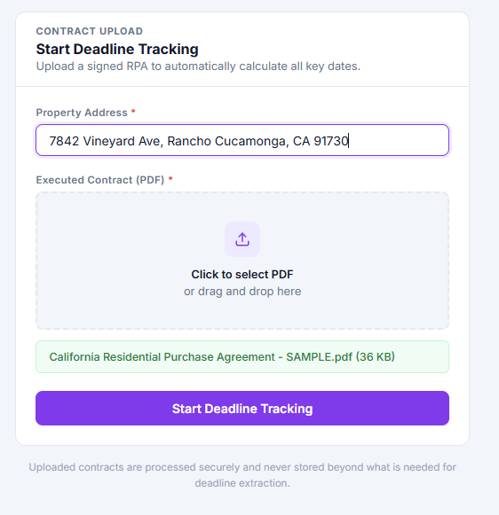
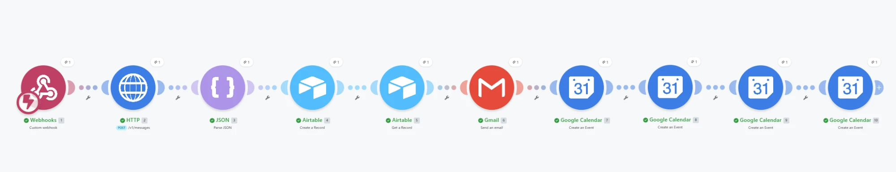
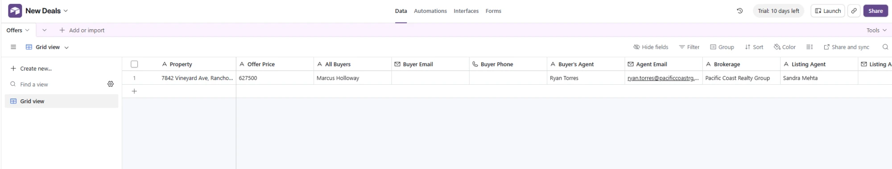
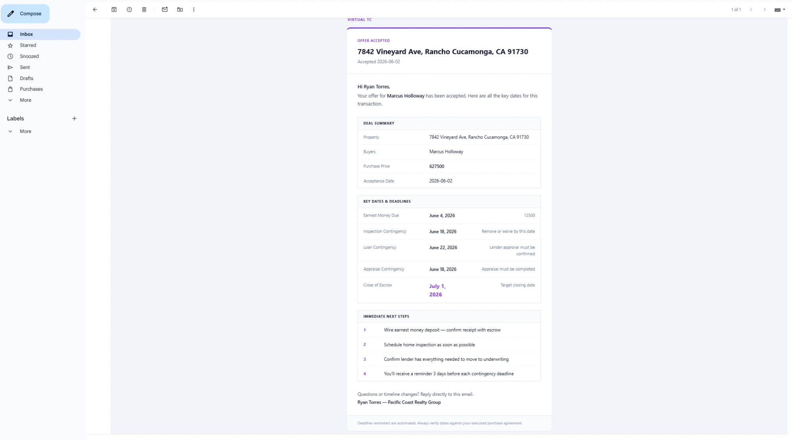
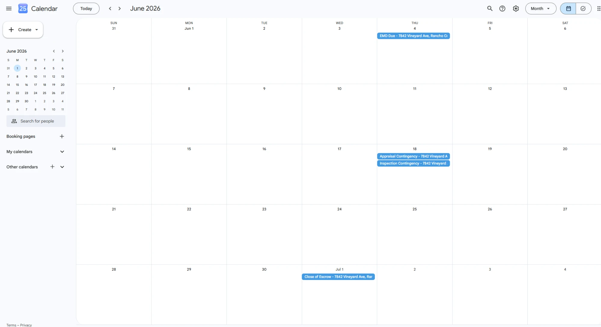

A transaction coordinator managing 20–30 active deals at once is essentially a human database. Every time an offer is accepted, they manually pull the contract, extract the key dates, enter everything into a spreadsheet, draft a timeline email for the agent, and set a series of calendar reminders, one for each contingency deadline.
It takes 30–45 minutes per deal. Multiply that across a full pipeline and you're looking at entire days every month spent on data entry that could have been handled by a system in about 90 seconds.
I built that system. Here's how it works.
What I Built
The automation handles everything that happens the moment a purchase agreement is accepted: extracting the deal data, creating the transaction record, notifying the agent, and building out the full deadline calendar, all triggered by a single PDF upload.
The stack is Make.com as the orchestration layer, Claude (Anthropic's AI) for document intelligence, Airtable as the transaction database, Gmail for agent communication, and Google Calendar for deadline tracking. No custom code. No developer required.
It's built specifically around the California Association of Realtors RPA: the standard CAR contingency periods, deadline structures, and field layout are handled out of the box.
How It Works
The agent uploads the signed purchase agreement PDF through a simple web form: property address, PDF, submit. That's it. The upload hits a Make.com webhook and the scenario runs automatically from there.


Claude reads the contract
The PDF is sent to Claude's API with a structured prompt asking it to extract every deal-relevant field: property address, buyer names, agent names and DRE license numbers, purchase price, loan amount, close of escrow date, and all four contingency types: inspection, loan, appraisal, and EMD. Claude returns clean, structured JSON. No OCR, no regex, no template matching. It reads the document the way a person would, regardless of how it's formatted.
Airtable record is created
Make.com parses the JSON and maps all extracted fields into a new record in the Airtable transaction tracker. Formula fields calculate the five key deadlines (EMD due date, inspection contingency removal, loan contingency removal, appraisal contingency removal, and final close of escrow) from the acceptance date and the contingency windows pulled directly from the contract.

Deal timeline email goes to the agent
The moment the record is created, Make.com retrieves the calculated deadline fields and sends the agent a formatted deal timeline email: property address, all parties, purchase price, and every contingency deadline laid out clearly. The close of escrow date is called out prominently. The agent has the full picture in their inbox before they've had a chance to open the contract themselves.

Five calendar events are created
One Google Calendar event per deadline (EMD, inspection, loan, appraisal, COE), each created automatically with the property address in the title. No manual calendar entry. Nothing gets missed because nothing was manually entered.

What This Replaced
Before this system, every accepted offer meant the same manual sequence: open the PDF, find the acceptance date, calculate each contingency deadline by hand, enter everything into a spreadsheet, write and send the timeline email, and set five separate calendar reminders. Thirty to forty-five minutes of focused attention, every time, on work that produced no value beyond the record itself.
The automation handles a new transaction in about 90 seconds. The TC's job shifted from data entry to deal management: same pipeline, completely different use of time.
It also eliminated a category of errors that were essentially guaranteed under the manual process. Contingency dates miscalculated by a day. Reminder emails that never got sent because something else came up. Calendar events created for the wrong property. These are the mistakes that happen when humans do repetitive data entry at volume, and in real estate, a missed contingency deadline can cost a client their deposit.
How You'd Adapt This
The core pattern (document in, structured data out, notifications and records created automatically) applies well beyond real estate TCs. A few natural variations:
- Law firms receiving signed agreements or court filings could extract key dates and parties, create matter records, and calendar deadlines automatically
- Property managers processing lease agreements could pull tenant info, rent amounts, and lease end dates into a property management database without manual entry
- Mortgage brokers handling loan applications could extract borrower details and document checklist items and route them to the right processor immediately
- Any service business using signed contracts could trigger their onboarding workflow the moment a deal closes, with nobody starting the process by hand
The document changes. The structure of the automation doesn't.
Want something like this for your business?
A short conversation is usually enough to spot the highest-impact places to automate. Tell me the workflow and I'll tell you honestly whether it's worth building.
Start a Conversation